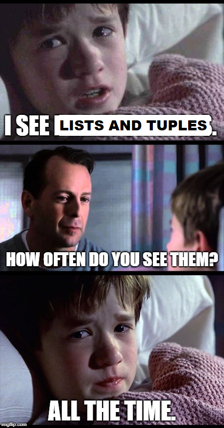

Feedback on some questions
Week 1
If python is free to download, how does python make money?
The Python Software Foundation (PSF), a non-profit organization, oversees the development and maintenance of Python. Some of the ways the PSF makes money include donations, corporate sponsorship, membership in the organization, conferences (PyCon), merchandise and licensing (t-shirts, etc), etc.
What does it mean that Python is an open source project?
Basically, it means you can inspect and see how it works (source code, etc). It is not an “company secret”. We’ll probably talk about that on next classes.
I am curious as to what career paths use Thonny.
Thonny is mostly an educational software for learning Python. Later you’ll can probably use more advanced IDEs, like PyCharm, Spyder, etc.
Is it better to combine lines of code or keep them separate? // How can I simplify the codes to be shortest?
R: This amounts to two considerations: 1) speed/efficiency and 2) programming style.
In this course we are not going through many considerations about speed and efficiency of your code. It is almost not needed given the programs we are implementing.
However, programming style makes a difference. Sometimes having everything to execute in one or few lines, or having the shortest way to write a code, may make your code difficult to understand. Or maybe not. It depends on audience, style, even on “personality”.
is it okay to just look up all questions that we have on code?
R: Usually it is - generally you are not required to memorize every kind of function, syntax, etc. You can always look up at some documentation and search for a specific thing you need. But it is important to know at least the basics, so you won’t be having to basically “re-learn Python” every time you are using it.
And be careful. Just copying and pasting some code you saw, without minimally understanding it, may be dangerous. Sometimes it is better to go through some documentation and understand better before just trying to put anything in.
Speaking of that, ChatGPT can be a good resource once you know what you are doing. But once you know what you are doing.
Unit 2
why are there operators like // and % that we don’t use in regular arithmetic?
R: The operators actually exist, but in some specific mathematical theory.
Integer division is usually represented as \(\lfloor x/y \rfloor\), but since it would be hard to type that in code, so Python developers found easier to just stick with //.
The % is called modulo operation and you can see it in mathematics in the form of \(mod(5,2)\) or \(5 mod 2\).
Could you please expand on % and // modulus?
R: I showed you an example in class today. Suppose we have a number like 12345 and we want to get the 3rd digit of this number.
What we can do is get the integer division by 100 and then have 123 (12345 // 100 = 123).
Then we get this 123 and use it to obtain the remainder of division by 10: 123 % 10 = 3.
So, given a variable “number”, to get the “n”-th digit, FROM LEFT TO RIGHT, we type: (number // 10**(n-1) ) % 10
Another nice thing we can do is check if a number is a multiple of other. If, for example, we have a variable NUMBER and find NUMBER % 6 to be equal to zero, we are then sure that the number is a multiple of 6.
I think I’m still a little confused about the overflow and their errors and would appreciate a bit more clarity on them. I could always look it up though to try to understand better.
R: It can be a little confusing, indeed, because it involves understanding how these numbers are represented in the computer memory – something that may become clear once you study, for example, a discipline called computer architecture.
You can check this to have more details on how these work in Python: https://docs.python.org/3/tutorial/floatingpoint.html
Or in case you are wondering how a float is represented, check this: https://float.exposed/
If there’s the desire for code to be functional, why does it so often seem so inaccessible? Are computer scientists working towards making coding more accessible or just sticking to their ways?
R: That’s the great question. Some computer scientists are working on that. Others just don’t care. Some are welcoming, others are gatekeeping. But we can do our part. There are lots of research and development on computer language design, including with a focus on easiness of use and accessibility.
See, for example, the examples of Quorum, Bootstrap and Myna languages.
what are some ways you can make your code nice and organized to be read by others? // Is there a style of coding where it is the easiest?
R: Python has its own style guide. But even these recommendations can be contested, as we discussed in class.
In software engineering courses, we usually study some programming workflows where we aim to make our code more understandable and easier to be worked by groups of programmers. Organizing a project in separate modules or components is one thing we’ll see later. Other things are, for example, relying on design patterns – standard ways of solving problems that are generally acknowledged across the programming community.
Week 3
how frequently are lists and tuples used in regular programming?

I’m confused as to why python is the only one to have dictionaries. what is the reason?
Python is not the only to have dictionaries - you find them too in Javascript, Ruby and C#.
Actually, in some languages, a dictionary is called a HashMap, which is a very common concept in programming - a structure that stores pairs of keys and values to simplify access to data.
Will we have to memorize which built-in types are mutable, subscriptable, and ordered?
Probably yes, but as you are working with them you’ll notice that this is pretty intuitive to grasp.
What is pneumonoultramicroscopicsilicovolcanoconiosis?
From ChatGPT: > “Pneumonoultramicroscopicsilicovolcanoconiosis” is a long word that was coined to be one of the longest words in the English language. It is often cited as a lung disease caused by inhaling very fine silica dust, such as that found in volcanoes. The word itself, however, is rarely used in medical practice [oh, don’t tell me!?]. It was created as a linguistic novelty rather than a term commonly used in the field of medicine.
In reality, medical professionals typically use more common and specific terms to describe lung diseases related to silica dust exposure, such as silicosis. Silicosis is a type of pneumoconiosis, which refers to a group of lung diseases caused by inhaling various types of dust.
If you don’t like it, try running our program with the German word Rindfleischetikettierungsüberwachungsaufgabenübertragungsgesetz
how would you write an encryption cipher that is harder to crack?
Well, there are lots of encryption algorithms out there. There is even a Python library that implements most of these. It is all by itself an area of study, which you can study deeper in courses such as computer security, etc.
Week 4
will we use other boolean operators like nor and nand?
Through our labs and homework, probably not. You may need that depending on your final project, though. For NOR and NAND, you can just write not (x or y) and not (x and y). For XOR and XNOR, there is a special operator: x ^ y (XOR) and not (x ^ y).
Can you use the if-else statement unlimited times?
In principle, yes, but be careful because your code may become unreadable.
Usually we can write if-elses with loops. In Week 5, we’ll see the while syntax, which is basically a if-else that will run how many times you want.
How can we prevent corporations and governments from turning entirely to AI/computer automation for things (I am thinking of the case worker example)
Well, that can be done from lots of areas: politics, research, or even raising awareness. There is an overall feeling in society that the more we can automate things, the better. This is not always true, and it is part of our Christian prophetic calling to show that to people. Some books that may help are Mark Coeckelbergh’s Political Philosophy of AI and Luciano Floridi’s Ethics of Artificial Intelligence.
Will it ever be possible to make computers understand what they are doing?
There are many ways to understand what is “understanding”, haha. The Chinese Room Experiment I showed you may show that just checking a manual may not be genuine understanding. Personally, I believe that understanding has a lot to do with the way we situate facts into our own personal narrative and social context. If computers/AI/robots, however, don’t have a personal history (childhood, adulthood, senescence, etc), it may be hard to think how they can understand in this sense. I wrote an article about that, but it is STILL only in Portuguese (although you can auto-translate). See here.
What are some of the dangers with code being written with binary answers (true/false), is it missing the complexities of the world?
In many cases, yes. See, for example, the very idea of an “OK” button in an interface:
“Buttons force decisions into binary choices. There is no way of answering that one partially agrees, has not realized the consequences of accepting, or does not care, even though these would probably be franker answers from most users. Buttons are verbs that rule out tenses other than present tense, and rule out modal auxiliary, subjunctive, and other more sophisticated ways in which our language expresses activity. Buttons also designate you as a masterful subject in full control of the situation, which obviously is problematic in many cases, such as the one above, where one cannot oversee, predict, or even understand the consequences of clicking “I accept,” or in other examples where the buttons effectively hide the scripts enacted by pressing it, such as in the “buy” example.” - Buttons, in book “Software studies, a lexicon”
I’m just really interested about the paper that you’re writing and would love to be able to know when you publish it and where it’s available!
Sure, I’ll let you know when it is out!
Week 5
Are infinite loops the main reason computers crash?
No, there can be lots of other reasons - hardware failures, overheating and insufficient memory, for example. This can also make the system unresponsive and in a state of “freeze”. But infinite loops can do that, too. And some modern operating systems (Windows, Mac, etc) usually have some software to safeguard against that - it sets a timer, for example, and if after some time is not responding, it can kill the process. (It is the only way to “kind of” detect, though, in an imperfect way - as we have seen in class, there is no algorithm to perfectly detect an infinite loop.)
how do you know when it is better to use a list or dictionary?
Lists: when your data is ordered, and you want to access positions by indexes (given as integer numbers). Dictionaries: your data is an association between keys and values (like, name and phone, etc).